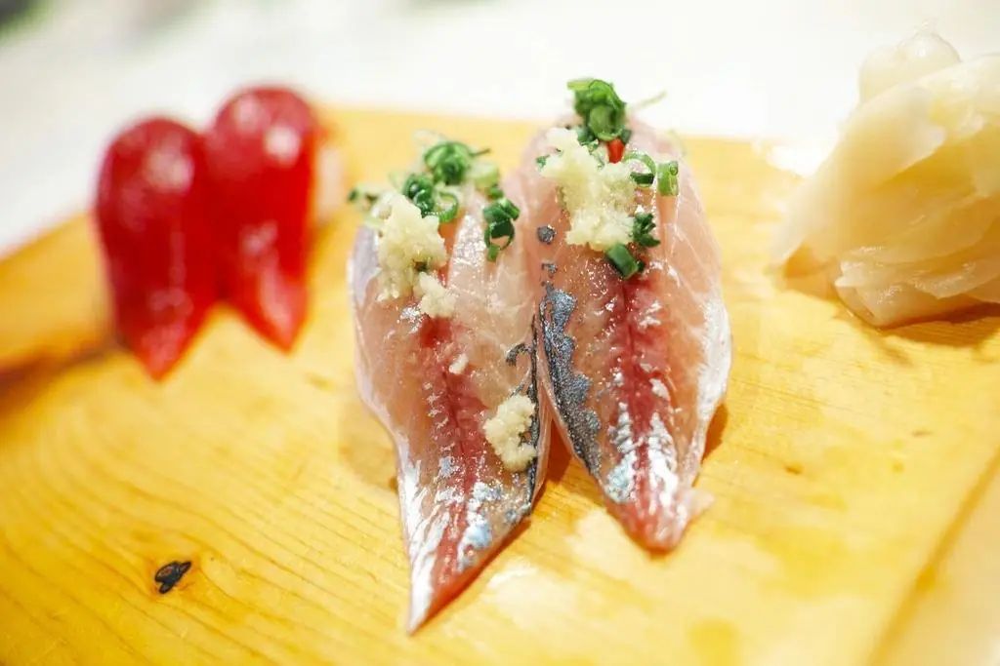

Meny
Hela menyn med priser – för lunch, middag och avhämtning.
Lunch, mix och omakase
Lunch vid disken
Dagens tio bitar eller poké, med allt som hör till.
139 krvardagar 11–14- Misosoppa och sallad
- Grönt te och vatten
- Påfyllning av ingefära
- Serveras på under tio minuter
- Mest beställd
Mix 12 bitar
Kockens val av nigiri och maki efter dagens leverans.
229 kräta här eller ta med- Sex nigiri och sex maki
- Lax, hamachi och tonfisk
- Soja, wasabi och ingefära
- Glutenfri soja om du vill
Omakase
Åtta serveringar vid disken, en sittning på två timmar.
695 krper person, tors–lör- Två sittningar: 18.00 och 20.30
- Tolv platser per sittning
- Dryckespaket 395 kr
- Bokas i förväg
Hela menyn
| Lunch: dagens sushi, 10 bitar, med misosoppa | 139 kr |
|---|---|
| Lunch: poké med lax eller tofu | 135 kr |
| Lunch: veckans varma rätt | 149 kr |
| Nigiri lax med ponzu, 2 bitar | 56 kr |
| Nigiri flamberad saba, 2 bitar | 62 kr |
| Nigiri tonfisk, 2 bitar | 78 kr |
| Sashimi lax och hamachi, 9 skivor | 189 kr |
| Maki gurka och avokado, 8 bitar | 89 kr |
| Krispig räkrulle, 8 bitar | 129 kr |
| Mix 12 bitar, kockens val | 229 kr |
| Vegansk mix, 12 bitar | 199 kr |
| Barnsushi, 6 bitar med misosoppa | 89 kr |
| Edamame med flingsalt | 49 kr |
| Omakase, åtta serveringar | 695 kr |
| Sushifat, per person (12 bitar) | 209 kr |
Alla priser inklusive moms. Fråga personalen om allergener – vi har glutenfri soja.
Så fungerar take-away
- 1

Beställ
Ring eller beställ i webbshopen, och säg till om allergier direkt.
- 2

Vi skär och rullar
Fisken skärs först när din beställning kommer in, aldrig i förväg.
- 3

Hämta vid disken
Efter femton minuter står påsen märkt med ditt namn vid kassan.
- 4

Ät inom en timme
Sushi är godast i rumstemperatur – ställ den inte i kylen.
Innan du bokar eller beställer
Hittar du inte svaret? Ring eller mejla oss.
Måste jag boka bord?
Nej, fyra bord hålls alltid lediga för den som kommer in. Omakasen vid disken måste däremot bokas.
Kör ni ut mat?
Nej, vi har bara avhämtning. Riset blir hårt om sushin står i en bil för länge.
Kan ni laga glutenfritt?
Ja, vi har glutenfri soja och märker tempura och såser som innehåller vete. Säg till när du beställer.
Vad kostar omakasen?
695 kronor per person för åtta serveringar. Dryckespaket med sake eller alkoholfritt kostar 395 kronor.
Hur långt i förväg ska jag beställa sushifat?
Senast två dagar innan. Till fler än 40 personer vill vi gärna ha en vecka.
Har ni barnmeny?
Ja, sex bitar med lax, gurka och omelett för 89 kronor, med en liten misosoppa.